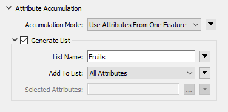

After completing this unit, you’ll be able to:
List attributes, sometimes referred to as lists, are FME's way of allowing an attribute to store multiple values per feature. For example, rather than creating a text field named FRUITS that stores the value “Apple, Orange, Pear”, a user can create a list, which is more structured and can be broken down into constituent parts for processing:
Fruits{0}: Apple
Fruits{1}: Orange
Fruits{2}: Pear
In FME, lists are denoted using curly brackets after the list name (e.g., this list is called Fruits{}), and a number inside the curly brackets represents the element's index inside the list, e.g., Orange is element 1 in the list. With this structure, lists can be reorganized, exploded into individual parts, analyzed statistically, and more.
FME offers the capability to translate between relational and object-oriented data models using list attributes. There are a variety of ways of modeling data in a database. Two of the most common are relational and object-oriented databases. To generalize, relational databases store data in tables that can be linked to each other through defined relationships. Object-oriented databases, on the other hand, store data on objects, commonly as a key-value pair.
Consider these examples from the United States Department of Transportation. A relational data model stores separate tables defining road maintenance activities and events. These tables can be linked by a shared key, in this case, an Activity Code:

However, the same data could instead be stored using an object-oriented model, where one object is a Maintenance Report and another is a definition of a Maintenance Activity. Data is stored as instances of these objects and can be linked by the values of certain key-value pairs, in this case, the value of Activity Code:

Object-oriented databases are useful because they are better suited to storing nested data, and they address the problem of object-relational impedance mismatch. Relational databases encourage keeping applications separate from the database structure, often requiring developers to translate their relational data model into an object-oriented one through their applications. Object-oriented databases, on the other hand, can store data directly in objects easily accessible by applications without translation. But relational databases are valued for their simplicity and common workflow of SQL-based queries and joins.
More broadly, many common data formats beyond databases can use relational or object-oriented models. For example, Microsoft Excel could be considered a simplified relational database, with each worksheet functioning like a table, while JSON and XML documents have object-oriented, nested data structures.
Because both models have their advantages, both are in common use today. However, many data integration workflows have to integrate data between these two models, which can be challenging due to their differences.
List attributes let you store object-oriented or nested data in FME's feature- or table-based framework.
You can inspect list attributes using the Feature Information Window. Select the feature you want to inspect. You will notice that lists are not included as attributes in Table View. Instead, look for the attribute in the Feature Information Window under Attributes. Each index and value will have its own row in the tree. You can double-click an item to inspect the full value.

Because they contain more values than can fit in a single cell of the Table View, list attributes cannot be exposed and will not appear in Table View or, in most cases, written data. Several transformers are available to help you extract data from lists and use it in your workspace or written data (see the next unit).
Because list attributes let a single attribute store multiple values per feature, they are often used to:
Express relationships
For example, listing the names of all the stores in a neighborhood in a list called Store_Names{}. FME transformers that conduct spatial analysis, like the Overlayer family of transformers, often generate lists like this.
Represent a nested data structure within FME's feature-based paradigm
For example, the following JSON:
[{
"name": "Apple",
"scientificName": "Malus domestica"
}, {
"name": "Orange",
"scientificName": "Citrus X sinensis"
}, {
"name": "Pear",
"scientificName": "Pyrus"
}]
can be stored as an FME list attribute:
Fruits{0}.name: Apple
Fruits{0}.scientificName: Malus domestica
Fruits{1}.name: Orange
Fruits{1}.scientificName: Citrus X sinensis
Fruits{2}.name: Pear
Fruits{2}.scientificName: Pyrus
Working with JSON and XML in FME requires making a decision about how to extract the nested structure into a mix of FME features and list attributes.
"Looping" with FME
Many new FME users ask how to create loops in a workspace. While custom transformers do support looping, you can almost always accomplish the desired goal using one of two superior methods:
Lists can be used to avoid loops by storing all the relevant values in a list and then using a list transformer like those shown here to explode, search, sort, or otherwise extract values to find the desired information. An advantage is that lists process much quicker than loops. That said, If you do use looping in a custom transformer, it's easier to apply a custom transformer loop to elements in a list than to a series of features.
Lists can be built manually, created automatically by a transformer, read and written by some formats (e.g. XML and JSON), or "exploded" back into single-value attributes. FME has 15 transformers for list manipulation (plus more on FME Hub; see the next unit for details) and over 80 transformers can produce lists. Transformers often create a list when attributes from different features are grouped into a single feature. Transformers that create lists usually have a "Generate List" checkbox under the "Attribute Accumulation" section of their parameters dialog:
